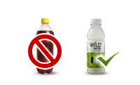
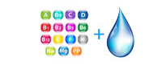
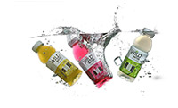
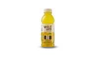
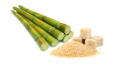

A. Wild-Water™ is actually your plain water but with natural ingredients like flavours and colours with added Vitamins. It is a Smart Hydration option that has low sugar content and can be substituted as your favourite drink replacing sugary colas and juices. Wild Water™ is the first of its kind in India.
A. A. Vitam-in-Water is another way of saying that this water contains Vitamins. It is a tasty way of having your daily vitamins on the go. Wild-Water™ has Vitamins such as Vitamin A, C, E, B3, B5, B6, B9, B12 & Zinc and it is good for your health!
A. Wild-Water™ is available in 3 different flavours each having separate function.
While, Tropical Citrus flavor is for energizing having natural caffeine and guarana extracts besides vitamins, the Lemonade flavour is for reload having electrolytes besides vitamins. The Dragonfruit flavour is for immunity as it has higher quantity of vitamin C besides zinc and taurine. You can learn more about the flavours and functionality by visiting www.drinkwildwater.com.
A. Although Wild-Water™ has much lower sugar content than in carbonated sugared beverages, it is important to check with your physician regarding the consumption of Wild-Water™ if you are diabetic.
In case you have any particular health condition we recommend checking with your dietician or a physician.
A. Only one of the Wild-Water™ variants - Tropical Citrus has caffeine. Dragon Fruit and Lemonade do not have caffeine. A bottle (400 ml) of tropical citrus flavoured Wild-Water has 36 grams of natural caffeine and 20 grams of guarana seed extracts which also gives caffeine.
A. Wild-Water™ has pure cane sugar and has been formulated with minimum amount of pure cane sugar so that the beverage is not very sweet to drink. Please check the nutrition facts on label for the amount of sugar.
A. Wild-Water™ is available in 200+ high-end stores in Delhi and Gurgaon. The product is placed in Modern Bazaar, Le Marche, Morning Store, all 24/7 outlets, popular convenios at petrol pumps and other A class outlets in Delhi and Gurgaon. In case you cannot find Wild-Water™ in the store next to you please contact us at 011-41848484 or email us at contact@drinkwildwater.com .